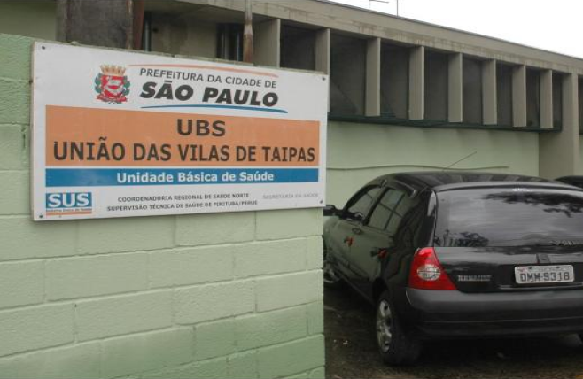
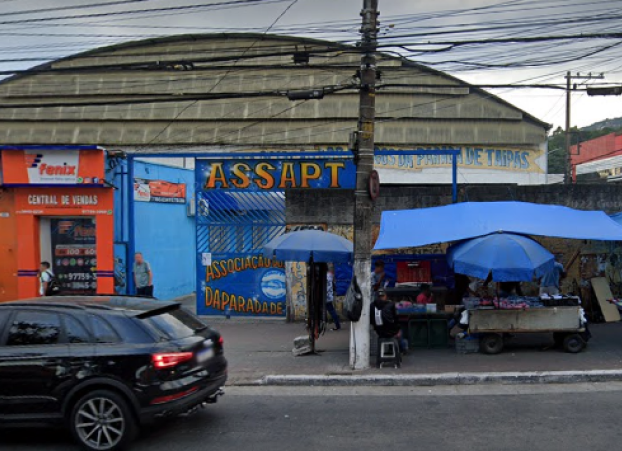

REGIÃO
O bairro é localizado na região noroeste de São Paulo e, é um sub-distrito de Pirituba.
DEMOGRAFIA
É o quarto bairro mais populoso de São Paulo com 150.990 habitantes e 15,4 km² de área.
LOCAIS
Na parada há muitas escolas, lojas, estabelescimentos de esporte, prédios e supermercados.
UBS União das Vilas de Taipas
Como é o único posto de saúde do bairro, em campanhas de vacina costuma ter muita lotação. Contudo, nos arredores da região tem mais postos de saúde, como o UPA de Perus, Pirituba e City Jaraguá. Ele se encontra na área central do comércio e faz parte do bairro há anos.

Associação dos Amigos da Parada de Taipas
A área da Associação dos Amigos da Parada de Taipas (ASSAPT) é alugada para exercer alguma atividade aos moradores. No estabelescimento, tem um pequeno bar com sinuca, parquinho, e uma quadra disponibilizada para aulas de futsal, zumba, e alguns eventos como o bingo.

Hospital Geral de Taipas
O HGT é um centro hospitalar que foi construído pelo governo paulista e inaugurado oficialmente em 3 de novembro de 1991. Além do Hospital Geral de Taipas, tem o Hospital Previna, e ambos são os únicos hospitais que exitem em Taipas. O HGT tem uma estrutura grande, mas tem capacidade para somente 220 leitos.
Supermercado Atacadão
O atacadão é a rede supermercadista mais popular que tem no bairro. É bastante movimentado, porém, além dele, tem o Assaí, Sonda, Rede plus e Roldão, concorrentes muito conhecidos pelos moradores. Só que, devido aos seus preços altamente baixos, o Atacadão faz sucesso na região.